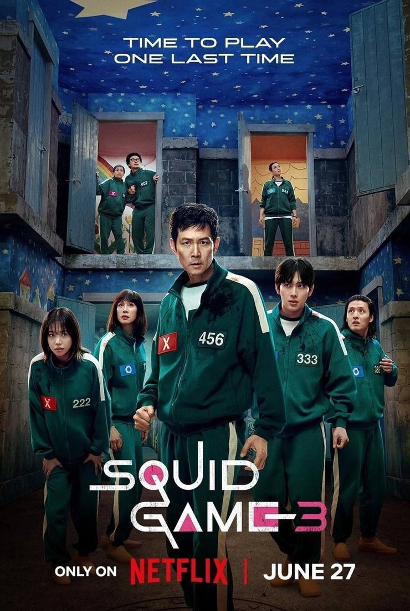
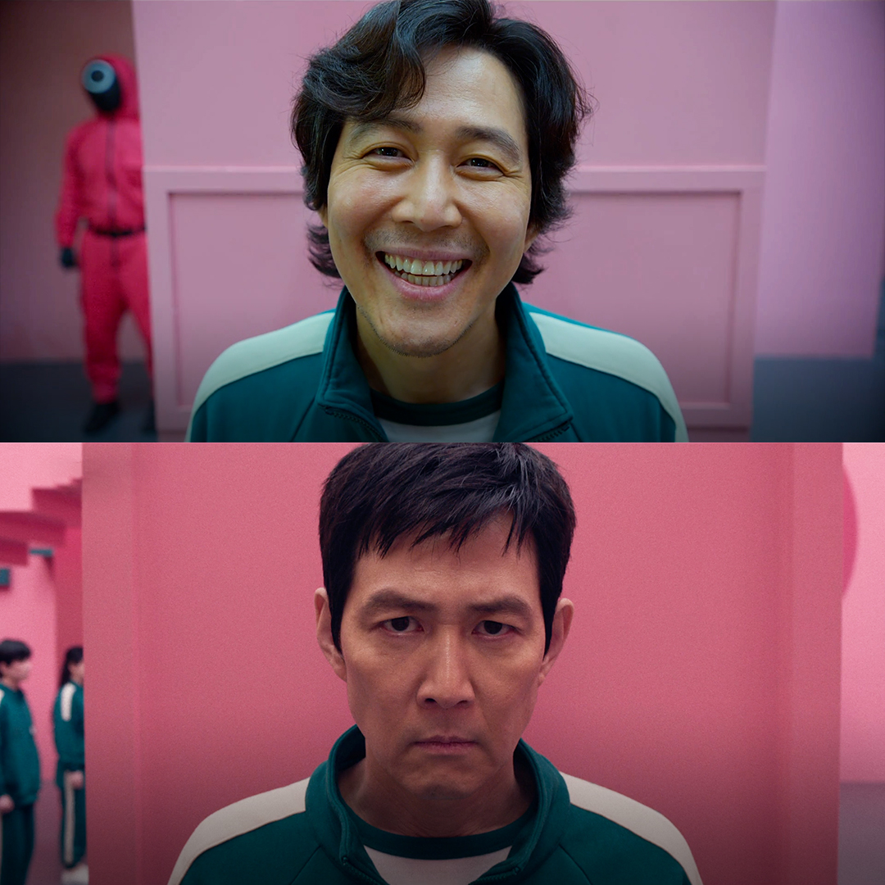
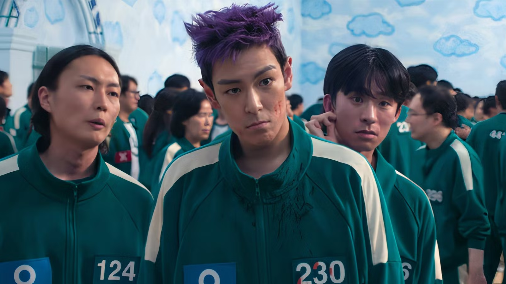

Полный гид по 1, 2 и 3 сезонам (4 сезон еще не вышел!)

Сон Ки Хун, погрязший в долгах, получает загадочное приглашение на игру. Вместе с 455 другими игроками он борется за приз в 45,6 миллиарда вон. Но цена проигрыша — смерть. Этот сезон познакомил нас с жестокими правилами и знаменитыми играми: «Тише едешь — дальше будешь» и «Сахарные соты».

Ки Хун возвращается в игру, чтобы отомстить организаторам и разрушить систему изнутри. Новые правила, новые лица и шокирующие союзы. Второй сезон раскрывает тайны Фронтмена и показывает, что игра гораздо масштабнее, чем казалось.

Финальная глава истории. Ки Хун и Фронтмен сталкиваются лицом к лицу. Смогут ли выжившие разрушить игру навсегда, или цикл насилия никогда не прекратится? Этот сезон обещает быть самым эмоциональным и кровавым.
Сезон 4 пока не вышел. Официальная дата неизвестна.
Большинство сцен с испытаниями снимались в огромных павильонах, построенных специально для сериала. Декорации были настолько масштабными, что напоминали настоящие города.
Некоторые сцены на открытом воздухе, включая пляжи и скалы, снимались на живописном острове Чечжу на юге Кореи.
Сцены в реальном мире (квартиры, улицы, метро) снимались в различных районах Сеула, включая старые жилые кварталы.
Специально для 2 и 3 сезонов были построены новые павильоны с еще более сложными декорациями, включая лабиринты и комнаты для голосования.
Сайт создан с любовью для самой лучшей сестры. 2026